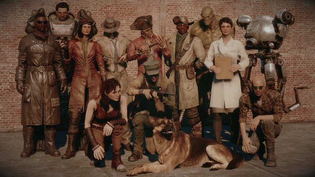

Cada compañero tiene sus propias preferencias y afinidades, lo que significa que algunas acciones del jugador pueden aumentar o disminuir su relación con ellos. A medida que la afinidad aumenta, se desbloquean diálogos adicionales, misiones personales y habilidades especiales que pueden beneficiar al jugador en combate u otras situaciones.
Compañeros
Los compañeros en Fallout 4 son personajes no jugador (NPC) que el jugador puede reclutar para que lo acompañen en su viaje a través del mundo del Commonwealth. Estos compañeros son más que simples seguidores: cada compañero tiene su propia historia y motivaciones, lo que se revela a medida que el jugador interactúa con ellos y completa misiones específicas relacionadas con su trasfondo. Estas misiones suelen ofrecer una visión más profunda del personaje y pueden llevar a cambios significativos en su relación con el jugador.
Los compañeros también tienen habilidades únicas que pueden ser útiles en diversas situaciones. Algunos son expertos en combate cuerpo a cuerpo, mientras que otros son francotiradores excepcionales o tienen habilidades especiales para piratear terminales o abrir cerraduras. Además de sus habilidades en combate, los compañeros también pueden proporcionar comentarios sobre el entorno, ofrecer consejos y comentarios sobre las decisiones del jugador, y participar en conversaciones con otros personajes del juego. Esto ayuda a dar vida al mundo del juego y a hacer que la experiencia de juego sea más inmersiva y envolvente.
Fallout 4 presenta un variado elenco de compañeros, cada uno con su propia personalidad, historia y habilidades únicas. En el juego base, hay 13 compañeros permanentes, cada uno con sus propias peculiaridades y tramas. Los complementos añaden cuatro compañeros adicionales; Automatron agrega dos compañeros robóticos totalmente personalizables; Far Harbor y Nuka-World introducen un único compañero centrado en la narrativa cada uno. Con todos los complementos instalados, el número total de compañeros permanentes en el juego es de 17, los cuales son: Codsworth, Dogmeat, Piper Wright, Nick Valentine, Paladin Danse, Curie, Deacon, Strong, Cait, Hancock, MacCready, Preston Garvey, X6-88, Old Longfellow (Far Harbor), Porter Gage (Nuka-World), Automatron (Automatron) y Ada (Automatron).
Estos compañeros son más que simples aliados; ofrecen diálogos interesantes, misiones personales y, a menudo, revelan información sobre el mundo del juego y su pasado. La interacción con ellos no solo agrega profundidad a la experiencia del jugador, sino que también puede influir en el desarrollo de la historia y en las decisiones que el jugador toma a lo largo del juego.
Cuando sirven como compañeros activos, expresarán diferentes pensamientos y estados de relación según su relación con el jugador, estos comentarios pueden ser odiosos, despectivos, neutrales, admirables, generosos y, para los compañeros románticos, cariñosos.
Aumentar o disminuir la afinidad de un compañero hasta cierto punto desencadenará un diálogo único con el personaje del jugador. La afinidad positiva revelará parte del trasfondo del compañero y cómo terminaron como son en la actualidad. Al alcanzar el estado de "idolatrar" máximo, el compañero admitirá considerar al personaje del jugador como su mejor amigo. La afinidad negativa resultará en compañeros decepcionados que les pedirán que cambien sus formas. Al alcanzar el estado de "odio" más bajo, el compañero amenazará con irse para siempre. Una prueba de carisma naranja puede convencerlos de darle al personaje del jugador una última oportunidad. Si la persuasión fue exitosa, pero luego la afinidad aún disminuye, el compañero eventualmente los condenará nuevamente y esta vez se irá para siempre, sin posibilidad de ser reclutado nuevamente. Esto se aplica a todos los compañeros excepto Dogmeat, Ada y los autómatas.
Además de los compañeros permanentes, Fallout 4 también presenta una variedad de compañeros temporales que solo están disponibles durante ciertas misiones o eventos específicos en el juego. Estos personajes acompañan al jugador por un período limitado de tiempo y, una vez que se completa la misión o evento, su papel en la historia llega a su fin. Aunque su presencia en el juego es breve, estos compañeros temporales a menudo desempeñan un papel importante en el desarrollo de la trama y pueden influir en las decisiones que el jugador toma durante su tiempo juntos.
A diferencia de Fallout 3, los compañeros en Fallout 4 están marcados como "esenciales" cuando sirven como compañeros activos, lo que significa que no pueden ser asesinados sin importar cuánto daño reciban. Si son incapacitados, automáticamente se curarán por completo después de que termine el combate. A diferencia de Fallout: New Vegas, si uno tiene al menos un stimpak en su inventario, se puede usar para rejuvenecer inmediatamente a un compañero incapacitado en lugar de que queden inconscientes y se vean obligados a esperar hasta que despierten después de que termine el combate.
Sin embargo, si se está jugando en modo Supervivencia, el compañero debe ser curado cuando esté incapacitado, incluso después del combate. Si no son curados dentro de un período de tiempo establecido, o cuando el jugador viaja más allá de cierta distancia, se marcharán y regresarán a su base de origen.

Si el jugador asesina a un inocente, su afinidad con su compañero actual disminuirá en un 10% y desencadenará un diálogo con el personaje del jugador expresando enojo y advirtiéndoles que nunca lo vuelvan a hacer. También pueden dejar al personaje del jugador en lugar de hablar con ellos. Al principio, se negarán a hablar con el personaje del jugador, pero después de unos días, el compañero podrá viajar nuevamente. Si el personaje del jugador ignora esta advertencia y repite un asesinato, los compañeros abandonarán permanentemente.
Esto se aplica a todos los compañeros excepto Strong (ya que le gusta el asesinato), mientras que Dogmeat, Ada y cualquier autómata son neutrales respecto al asesinato. Además, dependiendo de dónde se cometa un crimen, el compañero incluso puede volverse hostil hacia el personaje del jugador.